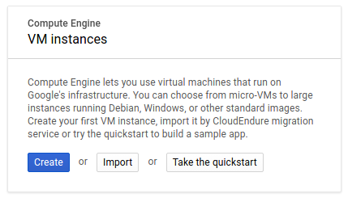
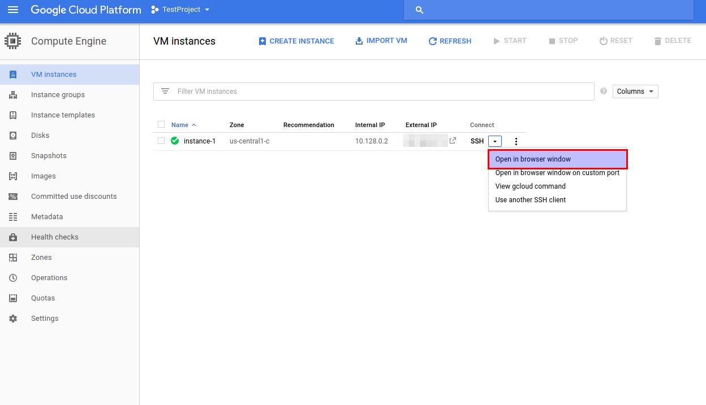
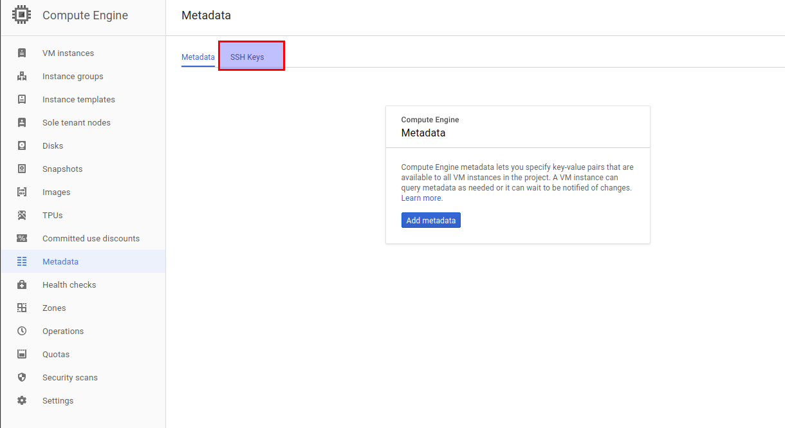
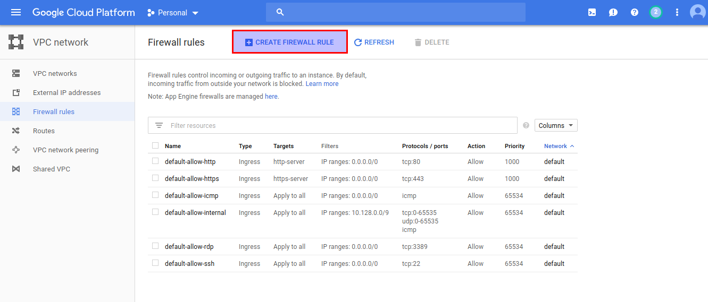
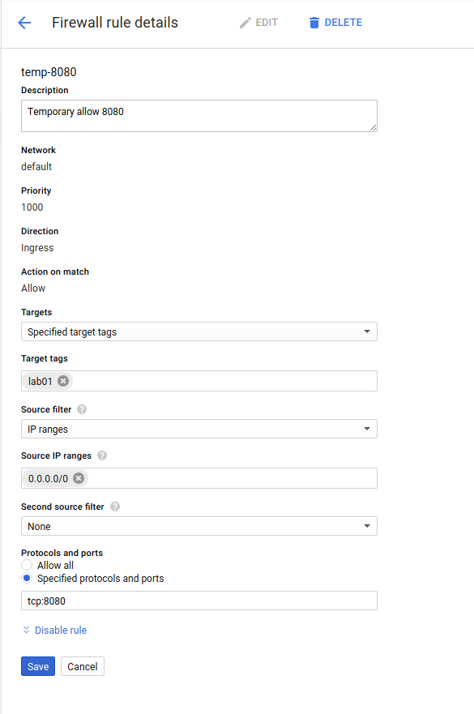
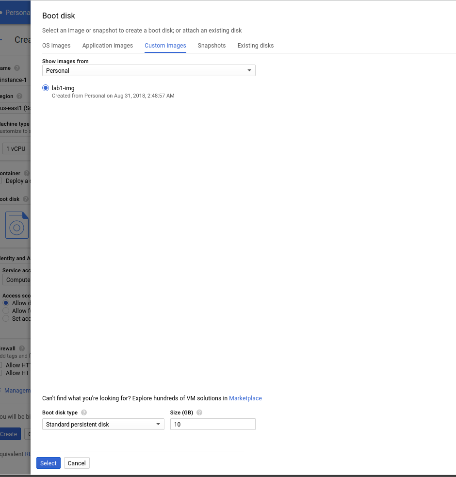

The purpose of this Lab is to familiarize students with the tools available within the Google Cloud Platform to manage Virtual Machines. This lab assumes that you have already completed the account registration process and that you have access to the Google Cloud Platform Console. You will create a virtual machine and deploy a simple RESTful service.
Login to the Google Cloud Platform Console
On the Left Navigation Bar, from the COMPUTE section, select Compute Engine > VM Instances. This operation might take a minute or two the first time. You will be presented with the following dialog

Click Create. This might take a minute or two the first time. You will be presented with the Create an instance dialog.
Provide a name for your instance. Since this is the first lab, lab1 is probably a reasonable name.
You need to select a Region and a Zone. Read the documentation about zones (https://cloud.google.com/compute/docs/regions-zones/). Select zone us-west1-a.
Notice the different options that are available for Machine Type. Click on the Customize link and inspect the different options that are available. Also notice that the selections you make determine the cost per hour of the instance.
For this lab we are going to create an instance of the lowest possible cost. Go back to the Basic View, and select micro (1 shared vCPU/0.6 GB memory)
Under Boot Disk, chick on “Change”, and notice that you are presented with several preconfigured images. Select Ubuntu 16.04 LTS, using a standard persistent disk of 10 GB.
Under Management provide a meaningful description of your own choice.
Under Networking assign a tag of lab01. We will need this to enable traffic later.
Let the options under Security, Disks and Sole Tenancy default.
Click on Create. Wait for a couple of minutes. Once this has completed, you should see the newly created instance on the “VM Instances” Console:
You can get shell access to the newly created Virtual Machine through the Google Cloud Platform web interface. Select the “Open in browser window” option from the “Connect” drop down menu:
This will open an SSH session that runs on a browser.
In order to be able to connect to the Virtual machine you just created using a local terminal (i.e. in the computer that you are currently using), you need first to set up a pair of SSH keys. Note that anyone that gets access to your SSH private keys will potentially able to get access to your machine(s), so you need to be very careful to not leave your private keys on systems that are accessible to others. It is highly encouraged to use a passphrase when creating your keys, and if you are doing this lab on a public/shared machine (e.g. one of SSU labs) make sure that the keys are stored in a directory that is only accessible to you.
Open a terminal in your local computer and use the ssh-keygen command to generate a new key pair. Make sure that you provide a -C parameter which is used by Google Cloud Platform to identify the user (replace <YOUR-USER> with your own)
> ssh-keygen -t rsa -b 2048 -f ~/.ssh/id_gcp -C <YOUR-USER>
Upload the public key: While on the Compute Engine dashboard, select the Metadata option from the left navigation menu and click on the SSH Keys link (you can go directly by entering this URL https://console.cloud.google.com/compute/metadata/sshKeys).

Click on Edit, + Add Item and paste the contents of your public key. Using the example keys that were generated earlier, this will be the content of the /home/<YOURACCOUNT>/.ssh/id_gcp.pub file if you are in a Linux system..
Save. Test your using ssh on your terminal:
> ssh -i~/.ssh/id_gcp <YOUR-USER>@<YOUR-VM-IPADDRESS>
Now that your virtual machine is running, you will setup and deploy a simple application that lets you register an account. We are going to add more pieces to the app on future labs. The source code for the app is hosted at http://github.com/jcabmora/minibank. Notice that the app will be updated constantly during the semester, so if you clone the repository, you will need to update accordingly.
The REST service that we will deploy later will listen in port 8080. In order to be able to get access to the service from the outside world, we need to configure Firewall Rules.
Login to the Google Cloud Platform Console.
On the Left Navigation Bar, from the NETWORKING section, select VPC network > Firewall Rules.
Click on the Create Firewall Rule link:

On the Create a firewall rule dialog, assign a name of temp-8080, provide a description. On Targets, select Specified target tags and on Target tags enter lab01. On Source IP ranges enter 0.0.0.0/0 (which means any IP Address). Specify tcp:8080 in protocols and ports.. Once you are done, your firewall rule should look like this:

The application that we are going to deploy requires a SQL database. In this part of the lab we are going to install mysql in the same Virtual Machine that was created in the previous step.
Log into the Virtual Machine if you haven’t already.
Install the mysql-server package. During the installation you will be prompted for the root password. Input a password of your choice, just make sure you’ll remember it since you’ll need it later.
> sudo apt-get update > sudo apt-get install -y mysql-server
We now need to create the database tables that our application will use. First login into a mysql session:
> mysql -uroot -p<YOUR-PASSWORD> mysql>
Once on the mysql session (you can verify by the mysql> prompt) create a database called minibank:
mysql> CREATE DATABASE minibank; Query OK, 1 rows affected (0.02 sec)
Activate the minibank database and create the account table:
mysql> use minibank; Database changed mysql> CREATE TABLE account ( -> id INTEGER NOT NULL AUTO_INCREMENT, -> username CHAR(30) NOT NULL, -> password CHAR(60) NOT NULL, -> timestamp BIGINT UNSIGNED NOT NULL, -> PRIMARY KEY(id), -> UNIQUE KEY(username) -> ) ENGINE=InnoDB DEFAULT CHARSET=utf8mb4; Query OK, 0 rows affected (0.03 sec)
Confirm that the table was created correctly:
mysql> describe account; +-----------+---------------------+------+-----+---------+----------------+ | Field | Type | Null | Key | Default | Extra | +-----------+---------------------+------+-----+---------+----------------+ | id | int(11) | NO | PRI | NULL | auto_increment | | username | char(30) | NO | UNI | NULL | | | password | char(60) | NO | | NULL | | | timestamp | bigint(20) unsigned | NO | | NULL | | +-----------+---------------------+------+-----+---------+----------------+ 4 rows in set (0.687 sec)
Create the minibank user:
mysql> CREATE USER 'minibank'@'%' IDENTIFIED BY 'minibank'; Query OK, 0 rows affected (0.00 sec) mysql> GRANT ALL PRIVILEGES ON minibank.* TO 'minibank'@'%'; Query OK, 0 rows affected (0.01 sec) mysql> FLUSH PRIVILEGES; Query OK, 0 rows affected (0.02 sec)
You can confirm that the user was created correctly by issuing the following statement:
mysql> SELECT user FROM mysql.user WHERE user = 'minibank'; +----------+ | user | +----------+ | minibank | +----------+ 1 row in set (0.00 sec) mysql> show grants for 'minibank'; +--------------------------------------------------------+ | Grants for minibank@% | +--------------------------------------------------------+ | GRANT USAGE ON *.* TO 'minibank'@'%' | | GRANT ALL PRIVILEGES ON minibank.* TO 'minibank'@'%' | +--------------------------------------------------------+ 2 rows in set (0.00 sec)
Exit the mysql interactive session (type exit)
The account registration service consists of an application written in go. You will not be provided with an executable, and you will need to compile the application your self.
Install go tools (official and most up-to-date instructions can be found at https://golang.org/doc/install):
> wget https://dl.google.com/go/go1.10.3.linux-amd64.tar.gz > sudo tar -C /usr/local -xvzf go1.10.3.linux-amd64.tar.gz > rm go1.10.3.linux-amd64.tar.gz
Create the go directory in your current user’s directory
> mkdir ~/go
Add the GOPATH environment variable to the ~/.profile file. Also add the $GOPATH/bin and the /usr/local/go/bin paths to the PATH environment variable. The modified lines within the ~/.profile file should look like this:
GOPATH="$HOME/go" export GOPATH # set PATH so it includes user's private bin directories PATH="$HOME/bin:$HOME/.local/bin:$GOPATH/bin:/usr/local/go/bin:$PATH"
Reload your profile settings for the previous changes to take effectivity:
> source ~/.profile
#.Execute the following command to confirm the environment variables were correctly setup:
> env | grep GOPATH GOPATH=/home/<YOUR-USER>/go
Test the go-tools installation
> go version go version go1.10.3 linux/amd64
Download the source code to your GOPATH
> wget https://github.com/jcabmora/minibank/archive/week1.tar.gz -O - | tar zxf - --strip-components=2 -C go
Confirm by listing the files within your GOPATH:
> ls -R $GOPATH /home/<YOUR-USER>/go: db.sql src /home/<YOUR-USER>/go/src: minibank /home/<YOUR-USER>/go/src/minibank: handlers main.go models /home/<YOUR-USER>/go/src/minibank/handlers: account.go /home/<YOUR-USER>/go/src/minibank/models: account.go db.go
Get the dependencies:
> cd $GOPATH && go get -t minibank
Build and install the app:
> cd $GOPATH && go install minibank
Run the service:
> minibank
On a new terminal which is not logged into the VM, execute the following command (you might need to install the curl utility). Use the External IP Address of your VM.
> curl -v http://<YOUR_VM_IP_ADDRESS>:8080/api/account/register -d '{"username": "john", "password": "john1234567"}' * Trying <YOUR_VM_IP_ADDRESS>... * TCP_NODELAY set * Connected to <YOUR_VM_IP_ADDRESS> (<YOUR_VM_IP_ADDRESS>) port 8080 (#0) > POST /api/account/register HTTP/1.1 > Host: <YOUR_VM_IP_ADDRESS>:8080 > User-Agent: curl/7.58.0 > Accept: */* > Content-Length: 47 > Content-Type: application/x-www-form-urlencoded > * upload completely sent off: 47 out of 47 bytes < HTTP/1.1 200 OK < Date: Fri, 31 Aug 2018 09:22:00 GMT < Content-Length: 33 < Content-Type: application/octet-stream < * Connection #0 to host <YOUR_VM_IP_ADDRESS> left intact Successfully registered account
Open another SSH session to the Lab VM, and log into a mysql session. Verify that the user record was created:
> mysql -uminibank -pminibank minibank -e "SELECT * FROM account;" mysql: [Warning] Using a password on the command line interface can be insecure. +----+----------+--------------------------------------------------------------+---------------+ | id | username | password | timestamp | +----+----------+--------------------------------------------------------------+---------------+ | 1 | john | $2a$10$cH4qX7TJIkanYuNXcTwRuevZyU3d7aUKkDfftTzy6QZSxnWgSRFYi | 1535707320920 | +----+----------+--------------------------------------------------------------+---------------+
Once you have finished the previous steps, go back to the VM instance dashboard and stop the instance. This process usually takes several seconds to complete. We now want to create an image of the VM that we just created so we can make clones of the service.
lab1-img) and a description of your choice. On Source disk, select the disk that corresponds to the VM we created before.Start again the process of creating a new VM as you did before. However,this time, during the boot disk selection, select the image that was previously created:

Start an SSH session to the new VM. Once logged in, simply start the minibank command. The service shoudl be running. Test the service from your local workstation.
In order to save credits, remove all the resources we created during this lab.